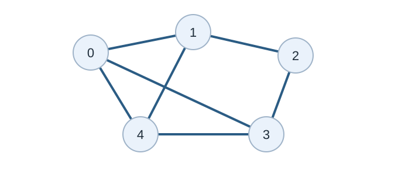

Graph Structure
คำอธิบาย
กราฟเป็นโครงสร้างข้อมูลไม่เชิงเส้น ประกอบด้วย node (vertex) และ edge
มีนิยามดังนี้
> A Graph consists of a finite set of vertices (or nodes) and set of Edges which connect a pair of nodes
Example

Undirected graph. Original diagram for this guide.
ในกราฟด้านบนประกอบด้วย set of vertices V = {0, 1, 2, 3, 4} และ set of edges E = {01, 12, 23, 34, 04, 14, 13}.
กราฟสามารถใช้ในการแก้ปัญหาจริงได้หลายปัญหา
กราฟสามารถใช้แสดงแทนเครือข่าย
เช่น เส้นทางในเมือง หรือเครือข่ายโทรศัพท์ หรือวงจรไฟฟ้า เป็นต้น
กราฟถูกใช้ใน social network เช่น LinkedIn และ Facebook
เช่น ใน Facebook บุคคลเป็น node ที่เก็บข้อมูลไอดี ชื่อ เพศ ต่าง ๆ และเชื่อมกันด้วยเส้นเชื่อมประเภทต่าง ๆ เช่น การเป็นเพื่อน
Type
Interactive reference: Introduction to Graphs by CS Academy 1
Undirected graph
Directed graph
Weighted graph คือกราฟที่ edge มีค่าน้ำหนัก เช่น ระยะทางหรือค่าใช้จ่าย
Unweighted graph คือกราฟที่ edge ทุกเส้นนับเท่ากัน
Simple graph คือไม่มี self-loop และไม่มี edge ซ้ำระหว่างคู่เดิม
Terminology
vertex หรือ node: จุดในกราฟ
edge: เส้นเชื่อมระหว่าง vertex
degree: จำนวน edge ที่ติดกับ vertex หนึ่ง
path: ลำดับของ vertex ที่เดินตาม edge ได้
cycle: path ที่เริ่มและจบที่ vertex เดิม
connected component: กลุ่ม vertex ที่เดินถึงกันได้
ในกราฟมีทิศทางจะมีคำว่า indegree และ outdegree
indegree: จำนวน edge ที่ชี้เข้ามา
outdegree: จำนวน edge ที่ชี้ออกไป
Representation
Interactive reference: Graph Representation by CS Academy 2
adjacency matrix
adjacency list
Adjacency matrix
ใช้ตาราง n × n เก็บว่า edge ระหว่างคู่ vertex มีหรือไม่
ตรวจว่ามี edge จาก u ไป v ได้ใน O(1)
ใช้หน่วยความจำ O(n2)
เหมาะกับกราฟหนาแน่นหรือ n เล็ก
vector<vector<int>> adj(n, vector<int>(n, 0));
adj[u][v] = 1;
adj[v][u] = 1; // ถ้าเป็น undirected graphAdjacency list
เก็บรายชื่อเพื่อนบ้านของแต่ละ vertex
ใช้หน่วยความจำ O(V + E)
เหมาะกับกราฟส่วนใหญ่ในการแข่งขัน
เดิน edge ทั้งหมดได้เร็ว
vector<vector<int>> adj(n);
adj[u].push_back(v);
adj[v].push_back(u); // ถ้าเป็น undirected graphถ้าเป็น weighted graph ให้เก็บ pair
vector<vector<pair<int, int>>> adj(n);
adj[u].push_back({v, w});Traversal
https://usaco.guide/CPH.pdf#page=119
graph traversal
DFS เหมาะกับการหา connected component, cycle และ topological sort
BFS เหมาะกับ shortest path ใน unweighted graph
เวลาทำงานของ traversal บน adjacency list คือ O(V + E)
โจทย์ฝึกฝน (Practice Problems)
ลองทำโจทย์เหล่านี้จาก CSES Problem Set เพื่อฝึกใช้ทักษะจากบทนี้ โดยเริ่มจากโจทย์ที่ง่ายที่สุดก่อน
โจทย์เพิ่มเติม: CSES Problem Set และ programming.in.th